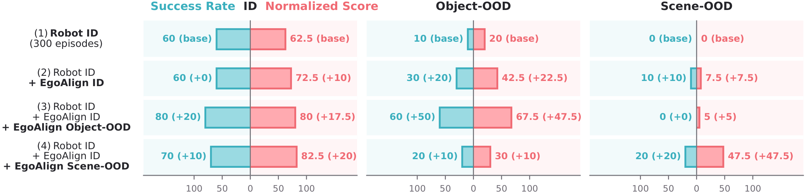
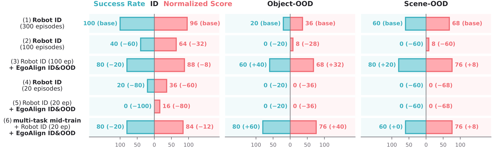

Robot-aligned human data enables OOD adaptation and reduces robot data.
OOD Adaptation

Real-Robot Task: Place into the Basket
Aligned human demonstrations expose the policy to deployment conditions absent from robot training. Without any object- or scene-OOD robot demonstrations, object-OOD success increases from 10% to 60%, while scene-OOD success increases from 0% to 20% with a substantially larger gain in task progress.
Reducing Robot-Data Dependence

Real-Robot Task: Fold Cloth
With 100 robot demonstrations, aligned human data recovers 80% ID, 60% object-OOD, and 80% scene-OOD success. Human data alone is insufficient when robot supervision falls to 20 demonstrations, but broad multi-task mid-training makes the same limited downstream data effective, reaching 80%, 80%, and 60% success, respectively.